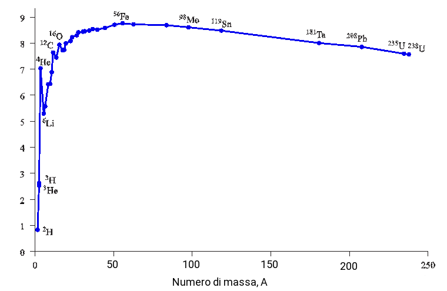

Difetto di massa
Ad eccezione di 1H la cui massa è esattamente uguale alla somma della massa del protone e quella dell'elettrone, le masse degli altri atomi presentano una massa leggermente inferiore a quella della somma delle masse di neutroni, protoni ed elettroni che li costituiscono.
Così come quando un legame chimico si forma e si ha una diminuzione di energia degli atomi separati rispetto alla molecola, anche nel caso dei nucleoni (protoni e neutroni) si verifica una diminuzione dell'energia a seguito del loro legame e la formazione dell'atomo.
Dalla nota formula di Einstein:
E = mc2
una diminuzione di energia a riposo del sistema, corrispone ad una diminuzione della massa a riposo, m0 di questo. Tale diminuzione di energia prende il nome
di energia di legame nucleare.
I difetti di massa si verificano anche nelle reazioni chimiche ma in tale caso la perdita di massa è generalmente trascurabile.
Vediamo alcuni esempi di calcolo delle energie di legame nucleare. Per svolgere tali calcoli è bene considerare le masse a riposo delle particelle coinvolte:
1u = 1.66054 ⋅ 10−27 kg
m0 elettrone = 9.10939 ⋅ 10−31 kg
m0 protone = 1.67262 ⋅ 10−27 kg
m0 protone = 1.67493 ⋅ 10−27 kg
c = 2.998 ⋅ 108 ms−1
Esempio 1. La massa atomico di è pari a 15.99491 u. La massa di questo isotopo dell'ossigeno è quindi pari a:
= 15.99491 ⋅ 1.66054 ⋅ 10−27 kh u−1 = 2.6560188 ⋅ 10−26 kg
Facendo la somma delle particelle costituenti l'atomo si ottinene invece una massa pari a:
= 8 ⋅ (9.10939 ⋅ 10−31) + 8 ⋅ (1.67262 ⋅ 10−27) + 8 (1.67493 ⋅ 10−27) = 2.142504910 ⋅ 10−25 kg
La differenza di massa è perciò:
Δm = 2.1425049 ⋅ 10−25 kg − 2.6560188 ⋅ 10−26 = 1.876903 ⋅ 10−27 kg
Dalla relazione di Einstein moltiplicando per la velocità della luce al quadrato, si ottiene l'energia di legame nucleare:
2.1425049 ⋅ 10−25 ⋅ 2.998 ⋅ 108 kg m2s−2 = 6.4232297 ⋅ 10−17 j⋅atomo−1 ■
La forza forte
Sino gli anni 70 dello scorso secolo, non si erano ancora svelati i meccaniscmi responsabili della tenuta dell'atomo. Era noto che il nucleo era composto da neutroni privi di carica e protoni carichi positivamente. Le cariche positive si sarebbero dovute respingere impedendo la formazione del nucleo. Una forza attrattiva più intensa di quella elettrica venne postulata in modo da spiegare la formazione del nucleo. Questa forza è nota come forza forte, ed è creduta come una delle forze fondamentali che agiscono tra nucleoni permettendo la formazione degli atomi. E' così definita perché presenta una intensità maggiore tra le quattro forze fondamentali presenti in natura, infatti il suo valore è circa 100 volte quello della forza elettromagnetica e circa 1039 volte quello della gravità.
In seguito si appurò che protoni e neutroni non sono particelle fodamentali, ma che a loro volta sono costituiti da altre particelle note come quarks. La forza forte tra nucleoni è un residuo dell'interazione, che lega i quarks assieme nei nucleoni.
Le forze nucleari sono forze a corto raggio, ciò significa che l'interazione è forte quando i nucleoni sono vicini e decresce rapidamente al loro allontanarsi. Tali forze sono molto intense a distanze internucleoniche di 1 femtometro (fm, or 1.0 × 10−15 metri), decrescendo rapidamente oltre i 2.5 fm. Si ricorsi che come ordine di grandezza le dimensioni dell'atomo, sono dell'ordine dell'angstrom (Å= 10−10 m), cinque ordine di grandezza superiome al fm.
Energia di legame nucleare per nucleone
Per comparare le energie di legame nucleari di atomi diversi, è utile considerare l'energia di legame dell'atomo per nucleone. Ossia l'energia di legame diviso il numero di nucleoni. Per es. per l'16O tale energia è data da:
6.4232297 ⋅ 10−17/16 = 4.0145182 ⋅ 10−18j
Solitamente tale energia è espressa in mega electron volts (MeV). Il nucleo con la maggiore energia di legame, quindi il più stabile è il , come si evince dalla figura sottostante.
Dal grafico si evince anche che nuclei con numero di massa pari a 4, 12, 16 presentano anch'essi una stabilità notevole. È il caso di 4O, 56Fe e .